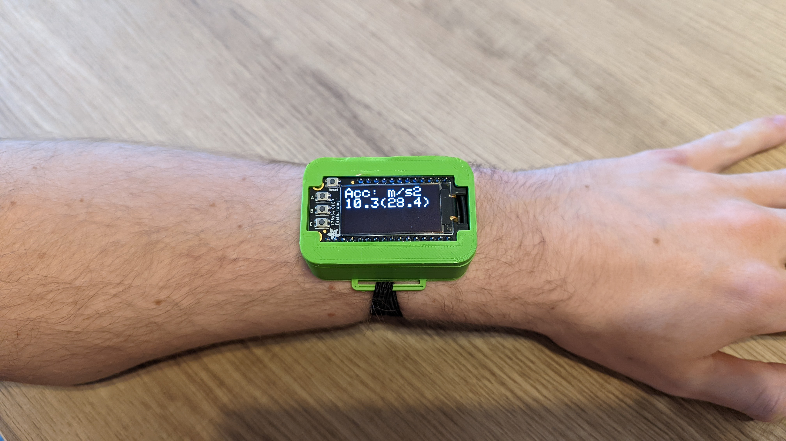
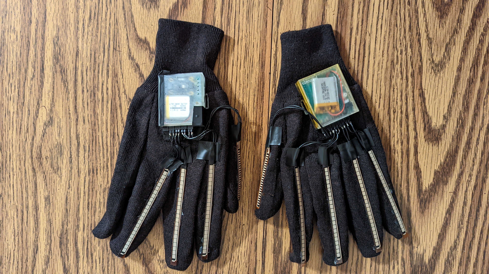
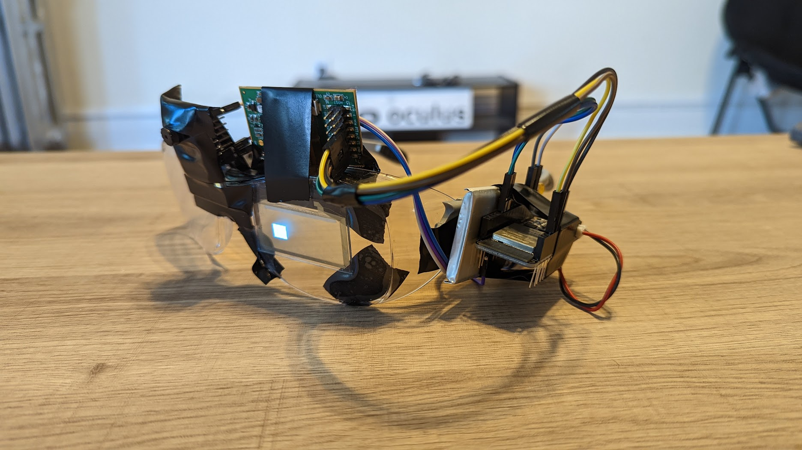

Computer & Electrical Engineering major focusing on embedded system design & rapid prototyping
DataRacer
Data logging smartwatch prototype for race car drivers
- Logs data to internal microSD card and visualizes on OLED display
- 32k lines of code in C++, supporting low power sleep and display reformatting
Gest
Gesture tracking smart gloves
- Can be paired to a laptop via BLE as an HID and operate on battery for up to 4 hours
- Supports mouse movement, clicking, typing, and zooming
- Automatic sensor recalibration and dynamic fault detection
EDITH
Ultra lightweight augmented reality glasses
- Utilizes a transparent OLED display and camera with image recognition for dynamic de-focused information overlay
- Designed + implemented in a 24-hour sprint
- Wireless web interface for device configuration